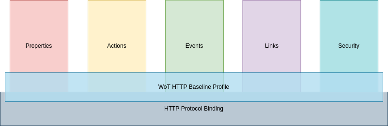
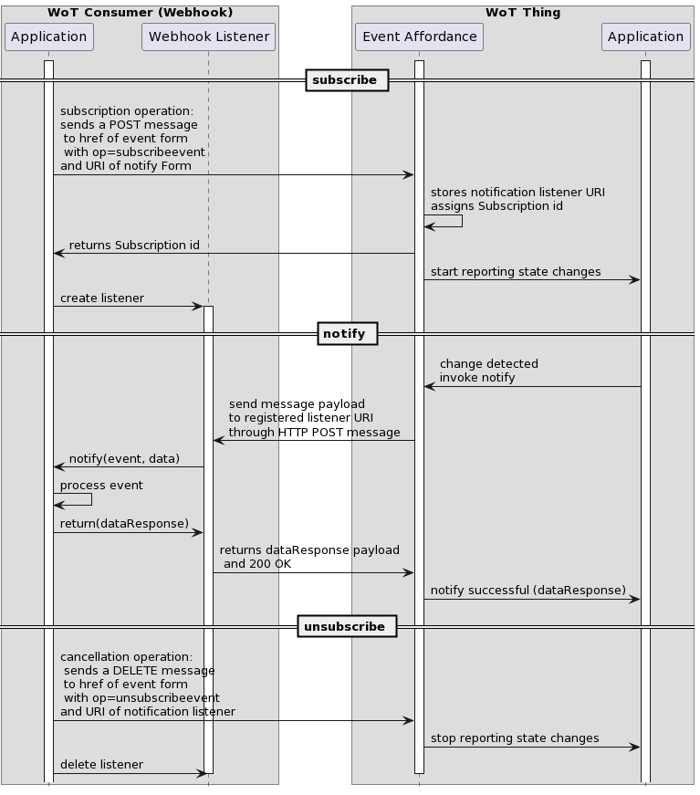

The WoT Profile Specification defines a Profiling
Mechanism and an HTTP Basic Profile, which enables out
of the box interoperability among things and devices. Out
of the box interoperability implies, that devices can be
integrated into various application scenarios without deep level
adaptations. Typically only minor configuration operations are
necessary (such as entering a network key, or IP address) to use
the device in a certain scenario. These actions can be done by
anyone without specific training.
The HTTP Basic Profile defines a set of constraints and
rules, which compliant thing descriptions have to adopt to
guarantee interoperability.
These rules are prescriptive, to ensure that compliant
implementations satisfy the semantic guarantees implied by them. We
call this set of rules a Profile.
The WoT Profile Specification as defined in
this document serves two purposes:
It defines a generic Profiling Mechanism which
provides a mechanism to describe a profile in an unambiguous way.
This mechanism can be used to define additional profiles.
In addition, it defines a HTTP Basic Profile of the Thing
Description, which contains protocol binding rules for HTTP.
In the current version of this document these event bindings are
provided in informative sections, to illustrate how these
event mechanisms could be supported in other profiles.
It is planned that future versions of this document
normatively define these event mechanisms.
This specification defines a set of normative constraints that
apply to all profiles defined by this document.
A TD
that is compliant to the HTTP Basic Profile MUST adhere to both the common constraints and the
protocol binding.
Devices that constrain their use of the Thing Description to the
HTTP Basic Profile can interoperate with each other
out-of-the-box.
Note that the HTTP Basic Profile is not exclusive. Device
implementers are free to adopt other features of the Thing
Description that go beyond the constraints of the HTTP Basic
Profile, however the interoperability guarantees of the HTTP Basic
Profile hold only for the HTTP Basic Profile subset.
Future versions of this document may contain other profiles,
e.g. a profile for digital twins and a profile for resource
constrained devices.
Motivation for a Profile
The W3C WoT Thing Architecture
[wot-architecture11]
and WoT Thing Description [wot-thing-description11]
define a powerful description mechanism and a format to describe
myriads of very different devices, which may be connected over
various protocols. The format is very flexible and open and puts
very few normative requirements on devices that implement it.
However, this flexibility de-facto prevents interoperability,
since, without additional rules, it allows
implementers to make many choices that do not provide
guarantees of common behavior between
implementations.
Status of This Document
This section describes the status of this document at the
time of its publication. A list of current W3C publications and the latest
revision of this technical report can be found in the W3C technical reports index
at https://www.w3.org/TR/.
Publication as a Working Draft does not imply endorsement by
W3C and its
Members.
This is a draft document and may be updated, replaced or
obsoleted by other documents at any time. It is inappropriate to
cite this document as other than work in progress.
This document was produced by a group operating under the
W3C Patent Policy.
W3C maintains a
public list of any patent
disclosures made in connection with the deliverables of the
group; that page also includes instructions for disclosing a
patent. An individual who has actual knowledge of a patent which
the individual believes contains Essential
Claim(s) must disclose the information in accordance with
section
6 of the W3C Patent
Policy.
The W3C WoT
Architecture [wot-architecture11]
and the WoT Thing Description [wot-thing-description11]
have been developed as a versatile format, that allows describing
the interactions between multiple devices and protocols.
This flexibility permits an easy integration of new device types
and protocols, however it risks interoperability, since there are
no guarantees that two devices which are formally
spec-compliant, will be able to communicate.
To increase adoption of the WoT specifications, interoperability
between on premise devices, edge devices and the cloud is
essential. Even if every manufacturer is implementing the current
Thing Description specification in full flexibility, there is no
interoperability guarantee; many choices are still left to the
implementations and there are very few normative requirements that
a device has to fulfill.
1.1
Deployment Scenarios
A Thing Description can be used in two fundamentally different
deployment scenarios:
a "brown-field" scenario, where it is created to describe the
interactions with existing systems.
a "green-field" scenario, where a device model and a thing
description are developed together.
For green field deployments, where the implementations are being
carried out and corresponding thing descriptions are being created,
it is easier to achieve full interoperability by using a small,
extensible HTTP Basic
Profile.
In the brown field area, due to the nature of existing
deployments and protocols, a broad spectrum of variations and
potentially high complexity of thing descriptions inhibits
interoperability and will most likely lead to additional profiles
of the WoT
Thing Description and domain-specific thing consumer
implementations.
The WoT HTTP Basic Profile can be used by green field
deployments and gives guidance to new implementers of the WoT
specifications.
1.2 Summary of Use Cases and Requirements
A set of over 30 use cases for the Web of Things were
contributed by stakeholders from multiple industries for various
application domains. These have been published in the WoT Use Cases
and Requirements document [wot-usecases].
Based on these use cases a set of requirements have been derived
which drive the development of the W3C Web of Things specification
family. Several of these domains require easy integration of
devices from multiple vendors, in other words, out-of-the-box
interoperability. However, the descriptive approach taken by the
WoT specifications generally leads to a large variety of different
protocols and data formats, which can work against out-of-the box
interoperability.
For example, a WoT Thing Description (TD) can in theory include
a description based on a networking protocol unknown to a device
that wishes to connect to it. To ensure interoperability without
additional customization (e.g. by writing software or performing
complex setup or configuration steps), the range of such choices
needs to be limited to a finite set so that a consumer of a Thing
Description can be sure it will be able to interact with any
possible Thing. A finite set of customization choices is also
important for implementing devices with a fixed code base. Defining
such constraints leads to the profile mechanism and the HTTP Basic
Profile.
In addition to multiple vertical use cases that will use HTTP(S)
for their implementations, there are horizontal use cases that are
addressed by this profile specification. The primary focus is to
enable Multi-Vendor system integration with out of the box
interoperability.
1.2.1 Multi-Vendor System Integration -
Out of the box interoperability
Users of devices want to process data from all devices that conform
to a class of devices in a uniform way. They need a guarantee that
they are able to correctly interact with all affordances of the
Thing that complies with this class of devices. Different
interpretations of the same Thing Description, that lead to
different behaviour, should not be possible. Users want to
integrate devices in existing scenarios out of the box, i.e. with
close to zero configuration tasks.
During the recent WoT Plugfests there were many de-facto
agreements on the use of a small constrained subset of interaction
patterns and protocol choices. These de-facto agreements select a
common subset of the WoT Thing Description,
based on proven interoperability among manufacturers.
The HTTP Basic Profile contains additional
normative requirements that MUST be
satisfied by devices to be compliant to the profile.

Figure 1 WoT HTTP Basic Profile - A Subset of
Affordances
Adoption of the HTTP Basic
Profile will significantly limit the implementation burden of
device and cloud implementors.
The HTTP Basic Profile was defined with the following main
goals:
guarantee interoperability among all implementations of the
profile.
limit the implementation complexity.
It makes choices on the required metadata fields as well as the
supported interactions and protocol endpoints. It introduces some
constraints on data schemas for properties and actions which are
required for resource constrained devices in real-world
deployments. The format does not forbid the use of additional
elements of the WoT Thing Description for
vendor specific extensions, however this will impact
interoperability.
1.4 Out-of-the-box interoperability
Devices, which implement the HTTP
Basic Profile, are out-of-the-box
interoperable with other HTTP Basic Profile compliant
devices. Furthermore, the HTTP Basic Profile simplifies device
validation and compliance testing since a corresponding conformance
test suite can be defined.
The following classification adopts the terminology as described
in the "H2020 – CREATE-IoT Project - Recommendations for
commonalities and interoperability profiles of IoT platforms"
[H2020-CREATE-IoT]
report. The definitions below have been adapted to reflect the
scope of the WoT profile.
1.4.1 Technical Interoperability
Technical Interoperability is usually associated with
communication protocols and the infrastructure needed for those
protocols to operate. This implies agreeing on a common protocol
(e.g. HTTP / TCP/IP) and providing additional clarifications, where
required.
1.4.2 Syntactic Interoperability
Syntactic Interoperability is usually associated with
data formats and encodings along with techniques for compressing
them. Examples for these formats and encodings in the WoT are JSON,
XML, JSON-LD, UTF-8 payloads.
1.4.3 Semantic Interoperability
Semantic Interoperability is associated with a common
understanding of the behavior of communication partners. In the
profile context, it includes a common interpretation of
(synchronous and asynchronous) action semantics, a common event
model, how to set/get multiple properties, writable properties, a
common error model and error messages.
Domain specific ontologies, e.g. semantic interop of automotive
and medical devices exceed the scope of the profile.
1.4.4 Organisational Interoperability
Organisational Interoperability in the profile context
implies that any consumer, which conforms with a given profile can
interact with any Thing which conforms with the same profile,
without additional customization.
Organisational Interoperability also requires commonly agreed
approaches to security, trust and privacy, i.e. a consumer is
provided access to Things only, when these common terms and
conditions are applied.
Devices created by various engineers, vendors and SDOs that
satisfy the requirements of the profile specification can be
integrated with compliant consumers without additional
customization. This works across infrastructures, regions and
cultures.
1.5 Structure of this document
Editor's note
to be added.
2.
Conformance
As well as sections marked as non-normative, all authoring
guidelines, diagrams, examples, and notes in this specification are
non-normative. Everything else in this specification is
normative.
The key words MAY, MUST, MUST NOT, OPTIONAL, RECOMMENDED,
REQUIRED, SHOULD,
and SHOULD NOT in this document are to be
interpreted as described in BCP 14
[RFC2119]
[RFC8174]
when, and only when, they appear in all capitals, as shown
here.
A device or consumer implementation complies with this
specification if it follows the normative statements in the present
document.
3.
Terminology
The fundamental WoT terminology such as Thing, Consumer, Thing Description
(TD), WoT Thing Description, Partial TD, Thing Model (TM), Interaction Model, Interaction
Affordance, Property, Action, Event, Protocol Binding, Servient, Vocabulary, Term,
Vocabulary Term,
WoT Interface, and
WoT Runtime are
defined in Section
3 of the WoT Architecture specification [WOT-ARCHITECTURE].
For convenience of the reader, we use the terms keyword
and field for the linguistic notion vocabulary
term as defined in the Thing Description
Specification.
We use the terms device and thing in an
interchangeable manner.
3.1
Additional Definitions
Profile
A technical specification which provides a set of assertions
such that any Consumer which conforms with the those
assertions is out-of-the-box interoperable
with any Thing
which also conforms with those assertions.
4.
Profile Requirements
The following requirements were identified by the WoT profile
task force and are addressed by the Profile 1.0 specification.
4.1
Interoperability
This is the most important objective of the profile. A TD
Consumer satisfying the requirements of a profile should be able to
process any TD also satisfying the profile and should be able to
correctly interact with all affordances of the Thing such a TD
describes.
This implies that a profile has three parts:
Restrictions on TDs
Implementation requirements, constraints and behavioral
assertions for Consumers
Implementation requirements, constraints and behavioral
assertions on Things
Note
Note: The WoT HTTP Basic Profile does not prevent
a TD to have forms for additional protocols, but these can be
ignored by compliant consumers, and could be removed without
affecting profile conformance and compatibility. This may be useful
for consumers that support multiple profiles.
4.2 Limit and reduce complexity
Complexity addresses at least the following two things to
simplify the development and reduce the implementation effort:
Implementation complexity on a thing and consumer, e.g.
eliminating the need of RDF processing, but still permitting
semantic annotations.
Simplifying thing description to have fewer variations.
Limiting the effort for JSON implementation.
4.3 No Ambiguities, select single choice
Get rid of ambiguities, i.e. clarify specifications to define
interpretation of a TD and behavior of the thing and consumer.
Examples are the choice of properties vs. actions, use of PUT or
POST for HTTP, observe protocols.
4.4
Developer guidance
A profile should help define what needs to be implemented. This
requirement also includes behavioral goals and recommendations
about best practice for the implementation of Consumers and
Things.
4.5 Multiple profiles (mechanism)
The mechanism used to indicate that a TD satisfies a profile
should be general enough to indicate the TD satisfies the
requirements for multiple profiles.
4.6
Composable profiles
It should be possible to combine multiple profiles both for
production and consumption:
It should be possible to indicate that a consumer can ingest TDs
that satisfy one or more profiles, even if each TDs individually
only satisfies one profile. For example, a Smart Building may need
to use both "constrained" devices and "unconstrained" devices. A
gateway consuming TDs should be able to ingest TDs designed for
both the constrained and unconstrained contexts.
A Thing that satisfies all the requirements for multiple TDs
(for example, a device using protocols common to two different
usage contexts) should be able to indicate that.
4.7
Validatible TDs
Whether or not a TD satisfies the requirements of a given
profile should be verifiable with automated tools. We can use the
existing TD JSDON Schema as a basis and reuse the existing tooling
(TD-playground)
4.8 Identification of profiles
There should be a mechanism to identify which profiles a TD
satisfies. This mechanism should be intrinsic to a TD, i.e. be
in-band.
4.9 Finite set of features and capabilities
A profile should limit the number of options, for example the
set of possible protocols, to a finite set, so that a consumer can
consume any TD in a given profile with a finite and static code
base.
5.
Profiling Mechanism
In
order to conform with a profile, a Web ThingMUST conform with all the normative
statements in the profile's specification.
In
order to denote that a given Web Thing
conforms to one or more profiles, its Thing Description MUST include a profile
member [wot-thing-description11].The
value of the profile member MUST be set to either a valid URI [RFC3986]
identifying a single profile, or an array of valid URIs identifying
multiple profiles.
In
order to use a profile member in a Thing Description,
the @context member MUST
contain the anyURI https://www.w3.org/2022/wot/td/v1.1
in order to denote that the document is using version 1.1 of the
Thing Description specification. [wot-thing-description11].
{
"@context": "https://www.w3.org/2022/wot/td/v1.1",
"id": "urn:dev:ops:32473-WoTLamp-1234",
"profile": [
"https://www.w3.org/2022/wot/profile/http-basic/v1",
"https://www.w3.org/2022/wot/profile/http-sse/v1"
],
"title": "My Lamp",
"description": "A web connected lamp",
...
}
6. Common
Constraints
The following sections are applicable for all of the HTTP
profiles defined by this document.
6.1
Accessibility
Authors of Thing
Descriptions must ensure that the things described by them are
accessible to users with disabilities.
It is REQUIRED
to provide a title that can be automatically rendered
in a non-visual way (e.g. using a screen reader) for things that
may be used in deployments with users with disabilities.
It is highly RECOMMENDED to provide a description
that can be automatically rendered in a non-visual way (e.g. using
a screen reader) for things that may be used in deployments with
users with disabilities.
Editor's note
This is just a baseline set of requirements,
which needs additional input from the APA group. It needs to be
clarified which TD elements are used by people with disabilities
and to which these constraints are applied.
6.2 Units
Authors of Thing
Descriptions should be aware that units that are common in
their geographic region are not globally applicable and may lead to
misinterpretation with drastic consequences.
It
is highly RECOMMENDED to provide a
unit, if a value has a physical quantity.
It is highly RECOMMENDED to use the metric system (SI units) for
devices that are used in global deployments.
6.3 Date Format
All date and time values
MUST use the date-time format
defined in [RFC3339].
In order to reduce ambiguity, RFC 3339 only permits an
hour with a value between 00 and 23 (not 24), and time zones
expressed as a numerical offset relative to UTC. The suffix "Z"
when applied to a time denotes a UTC offset of 00:00.
Conformant Consumers MUST support all of these security
schemes.
A Thing MAY implement multiple security schemes.
Conformant Consumers MUST support security bootstrapping for all
implemented security schemes, as defined in Security
Bootstrapping in the WoT Discovery [wot-discovery]
specification.
Conformant Things which require
authentication in order to retrieve their Thing Description
MUST implement security bootstrapping, as
defined in Security
Bootstrapping in the WoT Discovery [wot-discovery]
specification.
Hypermedia links in the HTTP Profiles are significantly
constrained to ensure a common interpretation and interoperability
between things and consumers.
The following keywords are defined for
links in the HTTP profiles and MAY be
present in profile-compliant TDs with the constraints defined by
this section.
Other keywords for links MAY be present in a TD, however their interpretation
is undefined in the context of the HTTP profilesThese other link types MAY be ignored by all profile-compliant
consumers.
Note
These links enable consumers to interpret linked content that is
provided by the link target in an unambiguous way. This
interpretation is a "best effort" mechanism, that depends on the
capabilities of the consumer. A consumer with a browser could
render HTML content, a consumer with a PDF engine can display PDF
content, a consumer with a dot-matrix display only can display
icons.
For consumers that can render images or documents this implies
to display appropriate documentation to a human reader.
Consumers that are capable of working with nested things and
thing model structures are able to navigate between things and
thing models in a well defined way.
mandatory, the supported subset of relation types is described
in Link Relation Types
below.
sizes
string with icon dimensions
mandatory for icon link targets, forbidden
otherwise.
hreflang
array of string with valid language tags according
to [BCP47]
optional.
6.6.1
Link Relation Types
Relation Type
Constraint
Remarks
icon
supported media types: image/png,
image/jpeg.
type
link target MUST be a
profile-compliant Thing
Model
No other types are defined in the Profile.
service-doc
human readable documentation, supported formats are Unicode
Text, markdown, HTML and PDF.
collection
link target is a collection of things or thing models.
item
link target is a collection member of the thing or thing
model.
6.6.2 Media Types for Link Targets
The following media types
from IANAMAY be used as the link targets of profile
compliant TDs with the constraints in this section.Other media types
MAY be present in a TD, however their heir
interpretation is undefined in the context of the HTTP profiles and
they MAY be ignored by all
profile-compliant consumers.
Type
Constraint
text/plain
charset=UTF-8
text/html
text/markdown
charset=UTF-8
text/pdf
application/json
application/ld+json
application/octet-stream
image/jpeg
image/png
If a Consumer encounters a
link with "rel": "icon" and "type": "image/*" and it is capable of
rendering images in the provided format, then it SHOULD interpret the link as an icon for the Thing
and display it to the user.
If a Consumer encounters a
link with "rel": "alternate" and "type": "text/html" and it is
capable of rendering an HTML page and accepting user input, then it
SHOULD interpret the link as a user
interface for the Thing and provide a means for the user to follow
that link and view and interact with the HTML page.
If a Consumer encounters a
link with "rel": "service-doc" and "type": "text/plain", "type":
"text/html" or "type": "text/pdf", and is capable of rendering
documents in the provided format, then it SHOULD interpret the link as a user manual for the
Thing and provide a means for the user to follow that link and read
the user manual.
If a Consumer encounters a
link with "rel": "item" and "type": "application/td+json" and is
capable of rendering a hierarchical tree of Things, then it should
interpret the link as an indication that the target is a sub-Thing
of the current Thing and render this in a meaningful way to the
user.
If a Consumer encounters a
link with "rel": "collection" and "type": "application/td+json" and
is capable of rendering a hierarchical tree of Things, then it
should interpret the link as an indication that the target
describes a Thing (e.g. a group, system of Things or Thing
Directory) which contains the current Thing and render this in a
meaningful way to the user.
7. Errors
If any of the operations defined in
the protocol bindings of HTTP profiles are unsuccessful then the
Web Thing MUST send an HTTP response with
an HTTP error code which describes the reason for the
failure.
It is RECOMMENDED that error responses
use one of the following HTTP error codes:
400 Bad Request
401 Unauthorized
403 Forbidden
404 Not Found
500 Internal Server Error
A Web Thing MAY respond with 3xx status codes for the purposes
of redirection, caching or authentication.A Web Thing
MUST NOT respond with a 300 Multiple
Choices status code.
Web Things MAY respond with other valid HTTP error codes (e.g.
418 I'm a teapot).Consumers
MAY interpret other valid HTTP error codes
as a generic 4xx or 5xx error with no
special defined behaviour.
If an HTTP error response contains a
body, the content of that body MUST
conform with the Problem Details format [RFC7807].
8. Default
Language
One Map contained in an
@context ArrayMUST contain a
name-value pair that defines the default language for the Thing
Description, where the name is the Term @language and
the value is a well-formed language tag as defined by [BCP47]
(e.g., en, de-AT, gsw-CH, zh-Hans, zh-Hant-HK,
sl-nedis).
9. HTTP
Basic Profile
This section defines the HTTP Basic Profile, which includes a
Protocol Binding
for reading and writing properties and invoking, querying and
cancelling actions.
This profile may be used in conjunction with the HTTP SSE Profile or the HTTP Webhook Profile in order to
provide operations for observing properties and listening for
events.
In
order to conform with the HTTP Basic Profile, Web Things and
Consumers MUST also conform with all of
the assertions in the Common
Constraints section.
9.1
Identifier
In order to denote that a given
Web
Thing conforms to the HTTP Basic Profile, its Thing Description
MUST have a profile
member [wot-thing-description]
with a value of
https://www.w3.org/2022/wot/profile/http-basic/v1.
9.2
Protocol Binding
This section defines a protocol binding which describes how a
Consumer
communicates with a Web Thing
[wot-architecture11]
using JSON [JSON]
payloads over the HTTP [HTTP11]
protocol.
A Consumer or Web Thing
conforming to the HTTP Basic Profile MUST
implement this protocol binding.
The examples provided throughout this section describe how a
Consumer would communicate with a Web Thing which produces the
following Thing Description:
The URL of a Property resource to be used when
reading the value of a property MUST be
obtained from a Thing Description by locating a Form
inside the corresponding PropertyAffordance for which:
After defaults have been applied, its op member
contains the value readproperty.
After being resolved against a base URL where applicable, the
URI
scheme [RFC3986]
of the value of its href member is http
or https
The resolved
value of the href member MUST
then be used as the URL of the Property
resource.
In order to read the value of a property, a Consumer MUST send an HTTP request to a Web Thing with:
If a Web Thing receives an HTTP request following the format
above and the Consumer has permission to read the corresponding
property, then upon successfully reading the value of the property
it MUST send an HTTP response with:
Status code set to 200
Content-Type header set to
application/json
A body with the value of the property serialized in JSON
HTTP/1.1200 OK
Content-Type: application/json
false
9.2.1.2
writeproperty
The URL of a Property resource to be used when
writing the value of a property MUST be
obtained from a Thing Description by locating a Form
inside the corresponding PropertyAffordance for which:
After defaults have been applied, its op member
contains the value writeproperty
After being resolved against a base URL where applicable, the
URI
scheme [RFC3986]
of the value of its href member is http
or https
The resolved
value of the href member MUST
then be used as the URL of the Property
resource.
In order to write the value of a property, a Consumer MUST send an HTTP request to a Web Thing with:
Method set to PUT
URL set to the URL of the Property resource
Content-Type header set to
application/json
A body with a requested new value for the property serialized
in JSON
PUT /things/lamp/properties/on HTTP/1.1Host: mythingserver.com
Content-Type: application/json
true
If a Web Thing receives an HTTP request following the format
above and the Consumer has permission to write the corresponding
property, then upon successfully writing the value of the property
it MUST send an HTTP response with:
The URL of a Properties resource to be used when
reading the value of all properties at once MUST be obtained from a Thing Description by
locating a Form
inside the top level forms member for which:
Its op member contains the value
readallproperties
After being resolved against a base URL where applicable, the
URI
scheme [RFC3986]
of the value of its href member is http
or https
The
resolved value of the href member MUST then be used as the URL of the
Properties resource.
In order to read the value of all properties, a Consumer
MUST send an HTTP request to a Web Thing
with:
If a Web Thing receives an HTTP request following the format
above, then upon successfully reading the values of all the
readable properties to which the Consumer has permission to access,
it MUST send an HTTP response with:
Status code set to 200
Content-Type header set to
application/json
A body with the values of all readable properties serialized in
JSON, as an object keyed by property name
HTTP/1.1200 OK
Content-Type: application/json
{
"on": false,
"level": 100
}
9.2.1.4 writemultipleproperties
The URL of a Properties resource to be used when
writing the value of multiple properties at once MUST be obtained from a Thing Description by
locating a Form
inside the top level forms member for which:
Its op member contains the value
writemultipleproperties
After being resolved against a base URL where applicable, the
URI
scheme [RFC3986]
of the value of its href member is http
or https
The
resolved value of the href member MUST then be used as the URL of the
Properties resource.
In order to write the value of multiple properties at once, a
Consumer MUST send an HTTP request to a
Web Thing with:
Method set to PUT
URL set to the URL of the Properties resource
Content-Type header set to
application/json
A body with requested new values for the writable properties
serialized in JSON, as an object keyed by property name
If a Web Thing receives an HTTP request following the format
above, then upon successfully writing the values of the requested
writable properties it MUST send an HTTP
response with:
The readmultipleproperties operation is excluded
due to the complexities of the request payload format and because
it doesn't add much functionality over readproperty
and readallproperties. writeallproperties
is excluded because it is just a special case of
writemultipleproperties.
9.2.2 Actions
9.2.2.1
invokeaction
The URL of an Action resource to be used when
invoking an action MUST be obtained from a
Thing Description by locating a Form
inside the corresponding
ActionAffordance for which:
After defaults have been applied, the value of its
op member is invokeaction
After being resolved against a base URL where applicable, the
URI
scheme [RFC3986]
of the value of its href member is http
or https
The resolved
value of the href member MUST
then be used as the URL of the Action
resource.
In order to invoke an action on a Web Thing, a Consumer
MUST send an HTTP request to the Web Thing
with:
Method set to POST
URL set to the URL of the Action resource
Accept header set to
application/json
Content-Type header set to
application/json
A body with an input to the action, if any, serialized in
JSON
For
long-running actions which are not expected to finish executing
within the timeout period of an HTTP request (e.g. 30 to 120
seconds), it is RECOMMENDED that a Web
Thing respond with an Asynchronous Action Response so that a
Consumer may continue to monitor the status of an action request
with a queryaction operation on a dynamically created
ActionStatus resource, after the initial
invokeaction response.
For
short-lived actions which are expected to finish executing within
the timeout period of an HTTP request, a Web Thing MAY wait until the action has completed to send a
Synchronous Action Response.
If a Web
Thing encounters an error in attempting to execute an action before
responding to the invokeaction request, then it
MUST send an Error Response.
Conforming
Consumers MUST support all three types of
response to the initial invokeaction request.After the
initial request, support for subsequent operations on an
ActionStatus resource is OPTIONAL.
9.2.2.1.1
ActionStatus object
The status of an asynchronous action invocation request is
represented by an ActionStatus object which includes
the following members:
Member
Description
Assignment
Type
status
The status of the action request.
mandatory
string (one of pending,
running, completed or
failed)
output
The output data, if any, of a completed action which MUST conform with the output data
schema of the corresponding
ActionAffordance.
optional
any type
error
An error message, if any, associated with a failed action which
MUST use the JSON serialization of the
Problem Details format [RFC7807] (only needed in
response to a queryaction
operation).
optional
object
href
The [URL] of an
ActionStatus resource which can be used by
queryaction and cancelaction operations,
the URI
scheme [RFC3986]
of which MUST resolve to http
or https (only needed for an Asynchronous Action Response).
optional
string
timeRequested
A timestamp indicating the time at which the Thing received the
request to execute the action. (See Date
Format for date format constraints).
optional
string
timeEnded
A timestamp indicating the time at which the Thing successfully
completed executing the action, or failed to execute the action.
(See Date Format for date format
constraints).
optional
string
Note
It is possible that a Thing's clock may not be set to
the correct time. If timings are important then a Consumer may
therefore choose to treat the timeEnded member of an
ActionStatus object as being relative to the
timeRequested member, but not necessarily as relative
to its own internal clock, or the clocks of other Things.
9.2.2.1.2
Synchronous Action Response
If providing a Synchronous Action Response, a Web Thing
MUST send an HTTP response with:
Status code set to 200
Content-Type header set to
application/json
A body containing the output of the action, if any, serialized
in JSON
If providing an Asynchronous Action Response, a Web Thing
MUST send an HTTP response containing the
URL of an ActionStatus resource, the URI scheme
[RFC3986]
of which MUST resolve to http
or https. The response MUST
have:
Status code set to 201
Content-Type header set to
application/json
Location header set to the URL of the
ActionStatus resource
A body containing an ActionStatus object serialized in
JSON, with its href member set to the URL of the
ActionStatus resource
A queryaction operation is used to query the
current state of an ongoing action request.
A Web Thing
which provides Asynchronous Action
Responses to an invokeaction operation on an
ActionMUST also support
queryaction operations on that same
Action.A Web Thing
which only provides Synchronous
Action Responses to an invokeaction operation on
an ActionSHOULD NOT support
queryaction operations on that same
Action.
The URL of an
ActionStatus resource to be used in a
queryaction operation MUST be
obtained from the Location header of an Asynchronous Action Response, or the
href member of the ActionStatus object in
its body.
In order to query the status of an action request, a Consumer
MUST send an HTTP request to a Web Thing
with:
GET /things/lamp/actions/fade/123e4567-e89b-12d3-a456-426655
Host: mythingserver.com
Accept: application/json
If a Web Thing receives an HTTP request following the format
above and the Consumer has permission to query the corresponding
ActionStatus resource, then upon successfully reading
the status of the action request it MUST
send an HTTP response with:
Status code set to 200
Content-Type header set to
application/json
A body containing an ActionStatus object
representing the current status of the action request, serialized
in JSON
HTTP/1.1200 OK
Content-Type: application/json
{
"status": "running",
"timeRequested": "2021-11-10T11:43:19.135Z"
}
If the queried
action failed to execute, then the status member of
the ActionStatus object MUST
be set to "failed".If the queried
action failed to execute, then the error member
MAY provide additional error information
conforming to the Problem Details format [RFC7807].
HTTP/1.1200 OK
Content-Type: application/json
{
"status": "failed",
"error": {
"type": "https://mythingserver.com/docs/errors/invalid-level",
"title": "Invalid value for level provided",
"invalid-params": [
{
"name": "level",
"reason": "Must be a valid number between 0 and 100"
}
]
},
"timeRequested": "2021-11-10T11:43:19.135Z",
"timeEnded": "2021-11-10T11:43:20.513Z"
}
9.2.2.3
cancelaction
A cancelaction operation is used to cancel an
ongoing Action request.
A Web Thing
which provides Asynchronous Action
Responses to an invokeaction operation on an
ActionMAY also support
cancelaction operations on that same
Action.A Web Thing
which only provides Synchronous
Action Responses to an invokeaction operation on
an ActionSHOULD NOT support
cancelaction operations on that same
Action.
The URL of an
ActionStatus resource to be used in a
cancelaction operation MUST
be obtained from the Location header of an Asynchronous Action Response, or the
href member of the ActionStatus object in
its body.
In order to cancel an action request, a Consumer MUST send an HTTP request to a Web Thing with:
If a Web Thing receives an HTTP request following the format
above and the Consumer has permission to cancel the corresponding
Action request, then upon successfully cancelling
Action it MUST send an HTTP
response with:
The URL of an Actions resource to be used when
querying the status of all ongoing action requests MUST be obtained from a Thing Description by
locating a Form
inside the top level forms member for which:
Its op member contains the value
queryallactions
After being resolved against a base URL where applicable, the
URI
scheme [RFC3986]
of the value of its href member is http
or https
The
resolved value of the href member MUST then be used as the URL of the
Actions resource.
In order to query the status of all ongoing action requests, a
Consumer MUST send an HTTP request to a
Web Thing with:
If a Web Thing receives an HTTP request following the format
above, then upon successfully retreiving the status of all ongoing
action requests to which the Consumer has permission to access, it
MUST send an HTTP response with:
Status code set to 200
Content-Type header set to
application/json
A body containing an object, keyed by Action name,
with the value of each object member being an array of ActionStatus objects representing
the action requests, serialized in JSON.
Each array
in the result object MUST be sorted in
reverse chronological order such that the most recent action
request appears first.
When an Action request is cancelled
with a cancelaction operation, its
ActionStatus object is deleted and need not be
retained. For all other Action requests it is assumed
that a Web Thing will store the ActionStatus object so
that its status may later be queried with a
queryaction or queryallactions operation.
It is not expected that ActionStatus objects should be
retained indefinitely, they may be stored in volatile memory and/or
periodically pruned. The length of time for which to retain
ActionStatus objects is expected to be
implementation-specific and may depend on application-specific
requirements or resource constraints.
10. HTTP SSE
Profile
This section is non-normative.
This section defines the HTTP SSE Profile, including a Protocol Binding for
observing properties and listening for events using Server-Sent
Events [EVENTSOURCE].
This profile may be used in conjunction with the HTTP Basic Profile in order to provide
operations to read and write properties and invoke, query and
cancel actions.
In order
to conform with the HTTP SSE Profile, Web Things and Consumers
MUST also conform with all of the
assertions in the Common
Constraints section.
10.1
Identifier
In order to denote that a given
Web
Thing conforms to the HTTP SSE Profile, its Thing Description
MUST have a profile
member [wot-thing-description]
with a value of
https://www.w3.org/2022/wot/profile/http-sse/v1.
A Consumer or Web Thing
conforming to the HTTP SSE Profile MUST
implement this protocol binding.
The examples provided throughout this section describe how a
Consumer would communicate with a Web Thing which produces the
following Thing Description:
The URL of a Property resource to be used when
observing the value of a property MUST be
obtained from a Thing Description by locating a Form
inside the corresponding PropertyAffordance for which:
Its op member contains the value
observeproperty
After being resolved against a base URL where applicable, the
URI
scheme [RFC3986]
of the value of its href member is http
or https
Its subprotocol member has a value of
sse
The resolved
value of the href member MUST
then be used as the URL of the Property
resource.
In order to
observe a property, a Consumer MUST follow
the Server-Sent Events [EVENTSOURCE] specification to open
a connection with the Web Thing at the URL of the
Property resource.
This involves the Consumer sending an HTTP request to the Web
Thing with:
For Consumers implemented in JavaScript
[ECMASCRIPT] and
executed in a runtime which exposes the EventSource interface, a Server-Sent Events
connection can be initiated using the EventSource
constructor.
const levelSource = new EventSource('/things/lamp/properties/level');
If a Web
Thing receives an HTTP request following the format above and the
Consumer has permission to observe the corresponding property, then
it MUST follow the Server-Sent Events
[EVENTSOURCE] specification to
maintain an open connection with the Consumer and push a property
value to the Consumer each time the value of the specified property
changes.
This involves the Web Thing initially sending an HTTP response
to the Consumer with:
Whenever the
value of the specified property changes while the Web Thing has an
open connection with a Consumer, the Web Thing MUST send a property value to the Consumer using the
event stream format in the Server-Sent Events [EVENTSOURCE] specification.For each
message sent, the Web Thing MUST set the
event field to the name of the
PropertyAffordance and populate the data
field with the property value, serialized in JSON and following the
data schema specified in the
PropertyAffordance.The
id field SHOULD be set to a
unique identifier for the property change, for use when
re-establishing a dropped connection (see below).It is
RECOMMENDED that the identifier is a
timestamp representing the time at which the property
changed (see Date Format for date
format constraints).
If the
connection between the Consumer and Web Thing drops (except as a
result of the unobserve operation defined below), the
Consumer MUST re-establish the connection
following the steps outlined in the Server-Sent Events
specification [EVENTSOURCE].Once the
connection is re-established the Web Thing SHOULD, if possible, send any missed property
changes which occurred since the last change specified by the
Consumer in a Last-Event-ID header.
10.2.1.2 unobserveproperty
In order to
stop observing a property, a Consumer MUST
terminate the corresponding Server-Sent Events connection with the
Web Thing as specified in the Server-Sent Events specification
[EVENTSOURCE].
Note:
Terminating a connection using JavaScript
For Consumers implemented in JavaScript
[ECMASCRIPT] and
executed in a runtime which exposes the EventSource interface, a Server-Sent Events
connection can be terminated using the close() method
on an EventSource [EVENTSOURCE] object.
The URL of a properties resource to be used when observing
changes to all properties of a Web Thing MUST be obtained from a Thing Description by
locating a Form
inside the top level forms member of a Thing Description for which:
Its op member contains the value
observeallproperties
After being resolved against a base URL where applicable, the
URI
scheme [RFC3986]
of the value of its href member is http
or https
Its subprotocol member has a value of
sse
The
resolved value of the href member MUST then be used as the URL of the properties
resource.
In order
to observe changes to all properties of a Web Thing, a Consumer
MUST follow the Server-Sent Events
[EVENTSOURCE] specification to open
a connection with the Web Thing at the URL of the properties
resource.
This involves the Consumer sending an HTTP request to the Web
Thing with:
For Consumers implemented in JavaScript
[ECMASCRIPT] and
executed in a runtime which exposes the EventSource interface, a Server-Sent Events
connection can be initiated using the EventSource
constructor.
const lampPropertiesSource = new EventSource('/things/lamp/properties');
If a Web
Thing receives an HTTP request following the format above then it
MUST follow the Server-Sent Events
[EVENTSOURCE] specification to
maintain an open connection with the Consumer and push new property
values to the Consumer for all properties for which it has
permission to observe.
This involves the Web Thing initially sending an HTTP response
to the Consumer with:
Whenever
a property changes while the Web Thing has an open connection with
a Consumer, the Web Thing MUST send the
new property value to the Consumer using the event stream format in
the Server-Sent Events [EVENTSOURCE] specification.For
each message sent, the Web Thing MUST set
the event field to the name of the
PropertyAffordance and populate the data
field with the new property value.The
property data MUST follow the data schema
specified in the PropertyAffordance and MUST be serialized in JSON.The
id field SHOULD be set to a
unique identifier for the event, for use when re-establishing a
dropped connection (see below).It is
RECOMMENDED that the identifier is a
timestamp representing the time at which the property
changed (see Date Format for date
format constraints).
If the
connection between the Consumer and Web Thing drops (except as a
result of the unobserveallproperties operation defined
below), the Consumer MUST re-establish the
connection following the steps outlined in the Server-Sent Events
specification [EVENTSOURCE].Once
the connection is re-established the Web Thing SHOULD, if possible, send any missed property
changes which occurred since the last change specified by the
Consumer in a Last-Event-ID header.
10.2.1.4 unobserveallproperties
In
order to unobserve all properties, a Consumer MUST terminate the corresponding Server-Sent Events
connection with the properties endpoint of the Web Thing, following
the steps specified in the Server-Sent Events specification
[EVENTSOURCE].
Note:
Terminating a connection using JavaScript
For Consumers implemented in JavaScript
[ECMASCRIPT] and
executed in a runtime which exposes the EventSource interface, a Server-Sent Events
connection can be terminated using the close() method
on an EventSource [EVENTSOURCE] object.
The HTTP SSE Profile uses Server-Sent Events [EVENTSOURCE] as a mechanism for
Consumers to subscribe to events emitted by a Web Thing.
Note
Consumers are not required to implement the
EventSource JavaScript API from the Server-Sent Events
specification in order to conform with this profile. Any
programming language may be used to consume an event stream.
10.2.2.1
subscribeevent
The URL of an Event resource to be used when
subscribing to an event MUST be obtained
from a Thing Description by locating a Form
inside the corresponding
EventAffordance for which:
After defaults have been applied, its op member
contains the value subscribeevent
After being resolved against a base URL where applicable, the
URI
scheme [RFC3986]
of the value of its href member is http
or https
Its subprotocol member has a value of
sse
The resolved
value of the href member MUST
then be used as the URL of the Event
resource.
In order to
subscribe to an event, a Consumer MUST
follow the Server-Sent Events [EVENTSOURCE] specification to open
a connection with the Web Thing at the URL of the
Event resource.
This involves the Consumer sending an HTTP request to the Web
Thing with:
For Consumers implemented in JavaScript
[ECMASCRIPT] and
executed in a runtime which exposes the EventSource interface, a Server-Sent Events
connection can be initiated using the EventSource
constructor.
const overheatedEventSource = new EventSource('/things/lamp/events/overheated');
If a Web Thing
receives an HTTP request following the format above and the
Consumer has permission to subscribe to the corresponding event,
then it MUST follow the Server-Sent Events
[EVENTSOURCE] specification to
maintain an open connection with the Consumer and push event data
to the Consumer as events of the specified type are
emitted.
This involves the Web Thing initially sending an HTTP response
to the Consumer with:
Whenever an
event of the specified type occurs while the Web Thing has an open
connection with a Consumer, the Web Thing MUST send event data to the Consumer using the event
stream format in the Server-Sent Events [EVENTSOURCE] specification.For each
message sent, the Web Thing MUST set the
event field to the name of the
EventAffordance and populate the data
field with event data, if any.The event
data MUST follow the data schema specified
in the EventAffordance and be serialized in
JSON.The
id field SHOULD be set to a
unique identifier for the event, for use when re-establishing a
dropped connection (see below).It is
RECOMMENDED that the identifier is a
timestamp representing the time at which the event ocurred
(see Date Format for date format
constraints).
If the
connection between the Consumer and Web Thing drops (except as a
result of the unsubscribe operation defined below),
the Consumer MUST re-establish the
connection following the steps outlined in the Server-Sent Events
specification [EVENTSOURCE].Once the
connection is re-established the Web Thing SHOULD, if possible, send any missed events which
occurred since the last event specified by the Consumer in a
Last-Event-ID header.
10.2.2.2 unsubscribeevent
In order to
unsubscribe from an event, a Consumer MUST
terminate the corresponding Server-Sent Events connection with the
Web Thing as specified in the Server-Sent Events specification
[EVENTSOURCE].
Note:
Terminating a connection using JavaScript
For Consumers implemented in JavaScript
[ECMASCRIPT] and
executed in a runtime which exposes the EventSource interface, a Server-Sent Events
connection can be terminated using the close() method
on an EventSource [EVENTSOURCE] object.
The URL of an events resource to be used when subscribing to all
events emitted by a Web Thing MUST be
obtained from a Thing Description by locating a Form
inside the top level forms member of a Thing Description for which:
Its op member contains the value
subscribeallevents
After being resolved against a base URL where applicable, the
URI
scheme [RFC3986]
of the value of its href member is http
or https
Its subprotocol member has a value of
sse
The
resolved value of the href member MUST then be used as the URL of the events
resource.
In order
to subscribe to all events emitted by a Web Thing, a Consumer
MUST follow the Server-Sent Events
[EVENTSOURCE] specification to open
a connection with the Web Thing at the URL of the events
resource.
This involves the Consumer sending an HTTP request to the Web
Thing with:
For Consumers implemented in JavaScript
[ECMASCRIPT] and
executed in a runtime which exposes the EventSource interface, a Server-Sent Events
connection can be initiated using the EventSource
constructor.
const lampEventsSource = new EventSource('/things/lamp/events');
If a Web
Thing receives an HTTP request following the format above then it
MUST follow the Server-Sent Events
[EVENTSOURCE] specification to
maintain an open connection with the Consumer and push event data
to the Consumer for all event types for which it has permission to
subscribe.
This involves the Web Thing initially sending an HTTP response
to the Consumer with:
Whenever
an event occurs while the Web Thing has an open connection with a
Consumer, the Web Thing MUST send event
data to the Consumer using the event stream format in the
Server-Sent Events [EVENTSOURCE] specification.For each
message sent, the Web Thing MUST set the
event field to the name of the
EventAffordance and populate the data
field with event data, if any.The event
data MUST follow the data schema specified
in the EventAffordance and be serialized in
JSON.The
id field SHOULD be set to a
unique identifier for the event, for use when re-establishing a
dropped connection (see below).It is
RECOMMENDED that the identifier is a
timestamp representing the time at which the event ocurred
(see Date Format for date format
constraints).
If the
connection between the Consumer and Web Thing drops (except as a
result of the unsubscribeallevents operation defined
below), the Consumer MUST re-establish the
connection following the steps outlined in the Server-Sent Events
specification [EVENTSOURCE].Once the
connection is re-established the Web Thing SHOULD, if possible, send any missed events which
occurred since the last event specified by the Consumer in a
Last-Event-ID header.
10.2.2.4 unsubscribeallevents
In order
to unsubscribe from all events, a Consumer MUST terminate the corresponding Server-Sent Events
connection with the events endpoint of the Web Thing, following the
steps specified in the Server-Sent Events specification
[EVENTSOURCE].
Note:
Terminating a connection using JavaScript
For Consumers implemented in JavaScript
[ECMASCRIPT] and
executed in a runtime which exposes the EventSource interface, a Server-Sent Events
connection can be terminated using the close() method
on an EventSource [EVENTSOURCE] object.
This section defines the HTTP Webhook Profile,
including a Protocol Binding for
observing properties and listening for events using WebHooks.
The HTTP
Webhook profileMAY be used in
conjunction with the HTTP Basic
Profile in order to provide operations to read and write
properties and invoke, query and cancel actions.
The HTTP Webhook profile may be used as an alternative
event mechanism to the HTTP SSE
Profile.
In order to
conform with the HTTP Webhook Profile, Web Things and Consumers
MUST also conform with all of the
assertions in the Common
Constraints section.
11.1
Introduction
Webhooks are a mechanism for Consumers to subscribe to events
emitted by a Web Thing.
The mechanism is scalable and supports Consumers that receive
events from multiple Things. Consumers implement a Webhook listener
that is handling the event streams generated by Things.
A Webhook is similar to a callback mechanism in programming
languages. Consumers can subscribe to events they are interested in
by registering a listener with the event endpoint. When the event
condition occurs, the WebThing is notifying all listeners with a
corresponding event message, which is transmitted over HTTP(s). The
event message contains details about the event, such as timestamp,
event type, event source etc. in the data payload.
Depending on the deployment scenarios and integration
requirements for existing consumers, it may be required to use
specific data payload formats (e.g. Cloud Events). When a listener
receives an event message in a data payload, in many cases it just
acknowledges the successful reception of the event. Additionally,
it may provide a dataResponse payload, which provides a
back-channel that can be used to communicate further details from
the consumer to the WebThing.
Depending on the
use case, a single listener for multiple things and multiple event
types MAY be used.
To minimize
network traffic, the same listerner MUST
NOT perform multiple subscriptions to the same
listener.
11.1.1
Webhook Example
The following sequence diagram illustrates the flow of messages
between a Consumer and a Web Thing when subscribing to,
unsubscribing from and receiving events.

Figure 2 HTTP Webhook Profile - Sequence of operations and
notifications
The following example contains a snippet from a TD that
illustrates how a Webhook event can be described.
In
order to denote that a given Web Thing
conforms to the HTTP Webhook Profile, its Thing Description
MUST have a profile
member [wot-thing-description]
with a value of
https://www.w3.org/2022/wot/profile/http-webhook/v1.
Note
Note that the profile member is an array that may
contain multiple profile entries, which indicates that a Web Thing
conforms to all of the profiles in that array.
11.3 Message
Format
Event notification messages
MUST comply with the following data
schema.
Editor's note
TODO: Describe data and dataResponse schemas.
11.4
Protocol Binding
This section defines a protocol binding which describes how a
Consumer
and a Web Thing
communicate using Webhook Events.
A Consumer or Web Thing
conforming to the HTTP Webhook Profile MUST implement this protocol binding.
11.4.1
Operations
11.4.1.1
subscribeevent
The URL of an Event resource to be used when
subscribing to an event MUST be obtained
from a Thing Description by locating a Form
inside the corresponding
EventAffordance for which:
After defaults have been applied, its op member
contains the value subscribeevent
After being resolved against a base URL where applicable, the
URI
scheme [RFC3986]
of the value of its href member is http
or https
Its subprotocol member has a value of
webhook
The
resolved value of the href member MUST then be used as the URL of the
Event resource.
In order
to subscribe to an event, a Consumer MUST
provide the listener URL in the request payload of the
subscribe operation of the Event
resource.
This involves the Consumer sending an HTTP request to the Web
Thing with:
Method set to POST
URL set to the URL of the Event resource
Accept header set to
application/json
A body with a subscription request payload, serialized in
JSON.
The subscription payload contains the URI for the event message
listener in the field with the callbackURI key.
If a Web
Thing receives an HTTP request following the format above and the
Consumer has permission to subscribe to the corresponding event,
then it MUST send event messages
to the Consumer as events of the specified type are
emitted.
This involves the Web Thing initially sending an HTTP response
to the Consumer with:
HTTP/1.1200 OK
Content-Type: application/json
{
subscriptionId: 1234-4544-1211
}
Whenever
an event of the specified type occurs, the Web Thing MUST send event data to the Consumer using the event
payload format defined in section
["#sec-http-webhook-profile-protocol-binding-events-notification"].
11.4.1.2 unsubscribeevent
In order
to unsubscribe to an event, a Consumer MUST provide the subscriptionID in the
data payload of the unsubscribe operation of the
Event resource.
This involves the Consumer sending an HTTP request to the Web
Thing with:
Method set to DELETE
URL set to the URL of the Event resource followed
by the subscriptionId of a valid subscription
The URL of an Events resource to be used when
subscribing to all events emitted by a Web Thing MUST be obtained from a Thing Description by
locating a Form
inside the top level forms member of a Thing Description for which:
Its op member contains the value
subscribeallevents
After being resolved against a base URL where applicable, the
URI
scheme [RFC3986]
of the value of its href member is http
or https
Its subprotocol member has a value of
webhook
The
resolved value of the href member MUST then be used as the URL of the events
resource.
In order to subscribe to all events emitted by a Web
Thing, a Consumer MUST send an HTTP
request to the Web Thing with:
Method set to POST
URL set to the URL of the events resource
Accept header set to
application/json
Request Payload contains a JSON
object with a subscription request payload.
If a
Web Thing receives an HTTP request following the format above, then
it MUST send event messages to
the Consumer for all event types for which it has permission to
subscribe.
This involves the Web Thing initially sending an HTTP response
to the Consumer with:
Status code set to 200
Content-Type header set to
application/json
Accept header set to
application/json
Response payload contains a JSON object with a
subscriptionId.
HTTP/1.1200 OK
Content-Type: application/json
{
subscriptionId: 1234-4544-1211
}
Whenever
an event occurs, the Web Thing MUST send
event data to the Consumer using the event payload format defined
in section Message
Format.
If the
connection between the Web Thing and the Consumer drops, the Web
Thing MUST re-establish the
connection.
Once
the connection is re-established the Web Thing SHOULD, if possible, send any missed events which
occurred since the last successful event notification.
11.4.1.4 unsubscribeallevents
In
order to unsubscribe from all events, a Consumer MUST invoke the unsubscribe operation
of the Event resource.
This involves the Consumer sending an HTTP request to the Web
Thing with:
A
HTTP(s) connection to the event listener of a Consumer MUST be initiated and managed by the Web
Thing.
A
Consumer MUST terminate the subscription
with the events endpoint of the Web Thing.
If a
Consumer becomes unavailable and the Web Thing cannot successfully
transmit event messages to the consumer, it SHOULD attempt several retries at increasing
intervals.
After
the maximum number of retries was reached, the Web Thing MAY terminate the subscription without having
received an unsubscribe or unsubscribeall
operation.
If the
connection between the Web Thing and the Consumer drops, the Web
Thing MUST attempt to re-establish the
connection.
Once
the connection is re-established, the Web Thing SHOULD, if possible, send any missed events which
occurred since the last successful event notification.
The Web
Thing MAY reuse an existing connection to
a listener for subsequent message traffic, or it MAY establish a new connection for each
message.
When
an event message has been received, the Consumer MUST respond with a "HTTP 200 OK"
message.
An
(optional) JSON payload MAY be provided to
return a response back to the Web Thing via the same communication
channel.